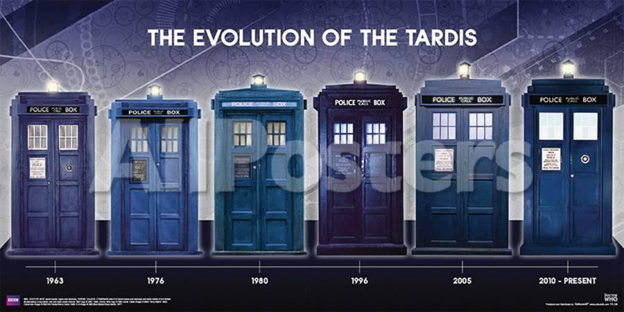

TARDIS
Tardis is the spaceship which Doctor uses the travel time and space.
It name comes from the initials of "Time And Relative Dimension In Space".
For a person who doesn't know Doctor Who Tardis is just an ordinary
spaceship.But Tardis has more than that.Tardis has a soul.In one episode
in the series it mentioned that.She changes with Doctor's regeneration.
The most important and shocking feature of Tardis is it's inside bigger
than the outside.It surprised all of the people who entered the Tardis
very first time.In the most of the time in the show we see a certain part
in the Tardis:the control part.However Tardis has more than that.There is a
library,a swimming pool,a wardrobe.
If you ever wonder why the Tardis looks like a police box the answer is it's
apperance fixed to police box and Doctor couldn't changed it.Who knows maybe
he this way.
